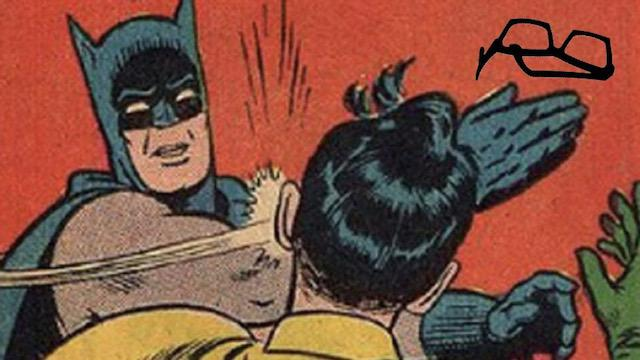

人工晶状体调节力的难题
终于过完2017到2018年了, 这篇写于2015-08-20的文章, 又可以理直气壮地重新贴一遍. 哇哈哈哈! 
2017年，世界上还有很多很多很多很多近视眼
2015-08-20
昨天(2015年8月19日)又看到所谓《2017年，世界上将不存在近视眼》的文章，类似的有《10秒钟让你恢复视力》http://fashion.sohu.com/20150529/n414051503.shtml 讲的是ocumetics (ocumetics.com)出的一种bionic lens能够将视力提高到3.0，这是误导，听我道来
这个基本上是一个这样的故事：理科生说给我一个支点我可以撬动地球，商科生激动地在写行星工程开发计划书，新闻系的同学拿着喇叭到处喊火星移民马上实现。现在由医科生讲讲为什么大家该吃药了。
youtube上有一段采访视频https://www.youtube.com/watch?v=Lqj7Mguu-Ps 以及在他们公司的网页上讲到这是一个intraocular lens，大陆叫做人工晶体或者人工晶状体，港台成为人工水晶体，极其不专业的专利会翻译成眼内透镜，缩写是IOL
IOL是一片高分子材料的透镜，放置在眼睛里面，最早是1949年由Sir.Ridely发明的。他当时发现皇家空军飞行员受伤后眼睛里残留着有机玻璃弹片，弹片在眼睛里居然没有发炎也没有引起排异反应。于是受此启发做了最早的IOL http://www.ridleyeyefoundation.org/history/sir-harold/
IOL放在眼睛里有几个可能的位置：角膜和虹膜之间（前房型），虹膜表面（虹膜固定），{虹膜和天然晶状体之间（睫状沟固定），去掉天然晶状体后存留的晶状体囊袋之内（囊袋内）}.（后房型）
IOL大多数应用是来治疗白内障的，也就是天然的晶状体混浊以后，医生通过手术把天然晶状体摘掉，再换上IOL。也有专门用来治疗近视的，目前有虹膜加持的Artisan 和睫状沟固定的 ICL
对于治疗近视的IOL植入，医生是要保留天然晶状体的，是有晶体眼的人工晶体植入。这是因为天然晶体具有调节能力，目前IOL还很难完美恢复这个能力。调节，就是人眼能够自动调整焦距，能够根据看远还是看近的需要调整天然晶状体的形态，改变焦距。
采访视频中 该公司叙述的这个bionic lens是植入到囊袋内的IOL。所以，这个IOL植入手术是建立在将天然晶体摘除以后的基础之上的。该公司寄希望于利用人工晶体产生足够的调节力，完全替换掉天然晶状体
要改变一个透镜的焦距，有几种办法：
- 换一片透镜
- 在同一片透镜上做出好几个焦距，根据需要遮挡掉不需要的。
- 移动透镜。
- 改变透镜形态。
- 改变透镜内折射率的分布。
0.换透镜就不说了，摘戴老花镜就是。
1.同一片透镜上做几个焦距，在眼镜上也有，比如双光的老花镜上半部分看远，下半部分看近。光学好的同学还应该知道菲涅耳波带片，靠衍射可以产生多个焦点。这也是现在IOL市场主流的解决方式。用折射多焦或者衍射多焦做出多个焦点，利用人眼在看近时瞳孔的变化，改变视远视近光强的能量分配。这种方案其实总还是有错误焦点的干扰，看远看近都有些虚。有些病人觉得很难受，有些病人能接受。
3.改变透镜形态。和 4.改变透镜内折射率的分布。这是人眼调节的方法，目前人工产品还很难学会。还有方案2.移动透镜。
从视频的讲解来看，ocumetics的方案就是移动透镜，这也是之前有IOL厂商用过的原理，比如1CU, tetraflex 还有用两片镜片配合在一起移动的。
如果没有外部供能，移动镜片有一个必要的前提假设——晶状体囊袋是有弹性的。天然晶状体长在囊袋里，囊袋四周有一圈悬韧带，悬韧带再挂到睫状体上，是一个悬挂式的结构。主流理论认为，人眼调节的时候，睫状肌会运动，晶状体本身的弹性使得晶状体形态和折射率分布发生改变。想象一个气球周边挂了一圈绳子，绑在一个呼啦圈上，改变呼啦圈直径，气球形态变化
如果囊袋变硬了，那么即使睫状肌能够运动，也只是通过悬韧带拉一个硬邦邦的盒子，盒子内部的结构是没有办法移动的。
这就是所有的利用人体自身力量进行调节的IOL的问题——囊袋会变硬。摘除天然晶状体的手术，是在囊袋上撕个圆孔，把晶状体的皮质、核从里面掏出来，保留表面的囊，再把IOL塞进去。这个手术是一个破坏性的手术。有破坏，身体就一定会启动修复过程。
手术中会尽量清除晶状体囊袋内的东西，包括残余的上皮细胞。但是很难完全清除干净，剩下的上皮细胞会散乱地生长，而且会长成纤维，纤维会交织，变硬。就像身上的皮肤划破了会留下硬质的瘢痕一样。医生们和身体的修复过程做斗争，很少有全胜的。
而且，还有个矛盾的问题。对于年轻的病人（白内障患者<=60岁我们都觉得很年轻），睫状肌会有很好的力量，但是修复能力强，囊袋纤维化严重；对于高龄的病人，比如80多岁了，他的纤维化倒是好点，但睫状肌已经没什么力量了。这还都是老年人。对于10-40岁的青年病人，囊袋纤维化非常严重，甚至手术之中必须把囊袋的后表面切除掉，免得纤维化阻挡了光线的进入。
所以即使有一个尚且可以使用的调节型IOL，也是适合于老年人，年轻人指望它来矫正近视，是不可靠的。
还得再吐槽下，顺着这篇报道http://www.businessinsider.com/ocumetics-bionic-lens-perfect-vision-at-every-age-2015-5 找过去CEO Dr. garth webb http://www.completeeyecare.ca/dr-garth-webb/ 是O.D.，不是M.D.好么。视光学和眼科学是两个学科，就像建筑系和土木工程系是两个系！
2016年更新:
这家公司在2015年炒作之后，又开始在2016年的微信里炒作了《淘汰近视镜，视力比飞行员高三倍，这家公司要逆天》。基本可以猜到是有中国的VC投钱了。
来，国安的球迷请跟我一起喊：⬛️⬛️！
除了在公众号上，在网站上可以搜到的文章来源是：http://mt.sohu.com/20160202/n436646404.shtml
作者是金错刀 http://mp.i.sohu.com/profile?xpt=MTY0MjQ2NzM0MEBzaW5hLnNvaHUuY29t
原来是“发明””“微创新”概念的人，失敬失敬。
来，国安的球迷请再跟我一起喊：大⬛️⬛️！
2018年更新:
我估计当时是有哪个中国投资人昏了头, 投了ocumetics, 胡乱在中文网站上炒作. 对骗子的宽容是对努力工作研究者的侮辱.
其实眼科医生们一直没有放弃对人工晶体调节力难题的研究.
-
在多焦点人工晶体的改进上. 三焦点的人工晶体, 和区域多焦点的人工晶体, 据说患者的满意度还不错. 虽然没有完全模拟生理的调节, 但如果病人觉得舒服, 能接受, 那也很好.
有钱投给他们呐!